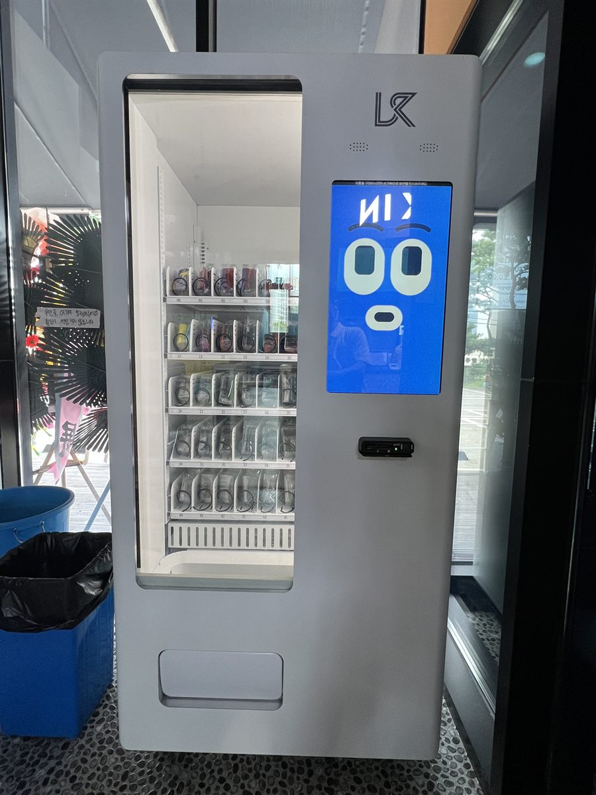

금천구 무인자판기 설치
지식산업센터 사무실 휴게공간 음료·스낵 자판기

사무실 건물은 손님이 종일 고르게 오는 곳이 아닙니다. 아침 출근 직후, 점심 먹고 들어오는 오후 한 시 무렵, 그리고 퇴근 전 짧은 휴식 시간. 하루 세 번의 봉우리가 거의 정해져 있습니다. 이번 금천구 현장에서 저희가 먼저 확인한 것도 층별 입주사 수가 아니라, 그 세 시간대에 사람들이 실제로 어느 통로를 지나는가였습니다.
관리소장님은 지하 주차장 엘리베이터 앞을 제안하셨습니다. 통행량은 확실히 많은 자리였지만, 사람들이 그곳에서는 멈추지 않습니다. 엘리베이터를 기다리는 몇십 초 동안 지갑을 꺼내는 일은 잘 일어나지 않습니다. 그래서 위층 휴게공간, 유리벽을 등지고 복도가 한눈에 들어오는 자리로 옮겨 잡았습니다. 커피 한 잔 들고 잠깐 서 있는 사람이 자연스럽게 화면을 마주 보게 되는 지점입니다.
금천구 사무실 휴게공간에 넣은 구성
사무직 환경은 세차장이나 야외 현장과 품목이 완전히 다릅니다. 대용량 생수보다 350mL 안팎의 작은 용량이 훨씬 잘 나갑니다. 자리에 두고 조금씩 마시다 미지근해지는 것을 싫어하시기 때문입니다. 그래서 캔커피와 소용량 생수, 제로 탄산을 손이 먼저 닿는 중간 칸에 배치했습니다. 간식은 책상에서 소리 안 나게 먹을 수 있는 것 위주로 골랐습니다. 바스락거림이 큰 과자는 회의실 근처라는 이유로 뺐습니다.
결제는 카드와 간편결제로만 열었습니다. 사무실 건물은 현금을 들고 다니는 분이 거의 없고, 현금함을 두면 잔돈 보충 때문에 오히려 사람이 와야 할 일이 늘어납니다. 재고와 내부 온도는 휴대폰에서 확인할 수 있고, 특정 칸이 비면 알림이 먼저 옵니다. 덕분에 보충 방문을 점심시간이나 퇴근 후로 몰아서 잡을 수 있습니다.
- 음료 — 350mL 안팎 소용량 위주. 캔커피·생수·제로 탄산을 중간 칸
- 간식 — 소리와 부스러기가 적은 품목. 큰 봉지 과자 제외
- 결제 — 카드·삼성페이·카카오페이·QR (현금함 미사용)
- 관리 — 재고·온도 원격 확인, 빈 칸 알림으로 보충 시점 조절
좋았던 점과 미리 아셔야 할 점
좋은 점부터 말씀드리면, 사무실 건물은 이용자가 매일 같은 사람이라는 것이 큰 강점입니다. 한 번 익숙해지면 그다음부터는 설명이 필요 없고, 어떤 품목이 팔리는지도 두세 주면 뚜렷하게 보입니다. 취향에 맞춰 칸을 바꾸기가 쉽다는 뜻입니다. 실내라 비와 직사광선을 맞지 않으니 기계 수명 면에서도 유리하고, 전원도 대부분 가까이에 있습니다.
반대로 감안하셔야 할 점입니다. 첫째, 주말과 공휴일에는 판매가 거의 멈춥니다. 입주사 근무일에 맞춰 매출이 움직이므로 한 달 기준으로 보셔야 합니다. 둘째, 조용한 층에서는 냉각기가 도는 소리가 신경 쓰일 수 있어 회의실이나 1인 사무실 바로 옆은 피하는 편이 낫습니다. 셋째, 건물 관리규약과 입주사 동의가 먼저입니다. 공용부에 기기를 두는 일이라 관리사무소 협의 없이 진행하면 나중에 자리를 옮겨야 할 수 있습니다. 넷째, 보충 동선에 화물 엘리베이터 이용 시간 제한이 걸려 있는 건물이 많아 미리 확인해야 합니다.
금천구, 이런 자리가 잘 맞습니다
금천구는 서울에서도 업무시설 밀도가 특히 높은 지역입니다. 가산동은 서울디지털산업단지가 자리해 지식산업센터와 의류 관련 상업시설이 빽빽하게 이어지고, 출퇴근 인구가 거주 인구보다 훨씬 많습니다. 독산동은 주거지와 소규모 공장·창고가 섞여 있어 낮 시간대 체류 인구가 꾸준합니다. 시흥동은 주택가와 재래 상권이 중심이라 성격이 또 다릅니다.
건물 안에서 저희가 권하는 자리는 사람이 잠깐 서 있게 되는 곳입니다. 휴게 라운지, 흡연구역으로 나가는 통로, 공용 회의실 앞처럼 몇 분이라도 머무는 지점이 좋습니다. 반대로 엘리베이터 정면과 비상계단 입구는 통행은 많아도 발이 멈추지 않아 기대만큼 나오지 않습니다.
금천구 서비스 지역
가산동 · 독산동 · 시흥동
금천구 전역에서 방문 상담이 가능합니다. 인접한 구로구·관악구·영등포구와 경기 광명시·안양시도 같은 담당자가 함께 다닙니다. 지역별 안내는 금천구 무인자판기 설치 안내 페이지에서 보실 수 있습니다.
금천구 무인자판기, 이렇게 시작하시면 됩니다
전화나 상담 신청으로 건물 주소만 남겨 주시면 됩니다. 담당자가 나가서 통행 동선, 콘센트까지의 거리, 문이 열리는 반경, 화물 엘리베이터 크기와 이용 규정을 확인합니다. 그 자리에 맞는 기종과 품목을 정하고 설치일을 잡으면 끝이며, 설치비는 받지 않습니다. 기계는 구입·렌탈·임대 중에서 고르실 수 있어 초기 비용 없이 시작하셔도 됩니다.
관리사무소 협의가 아직이거나 이용 인원이 너무 적은 층이면 그 자리에서 솔직히 말씀드립니다. 사무실은 조건이 맞으면 오래 꾸준히 가는 자리라, 서두르기보다 층과 위치를 제대로 고르는 편이 훨씬 낫습니다.
※ 사진은 픽프리가 시공한 설치 사례이며, 글에 적힌 지역의 현장 사진은 아닙니다.
함께 많이 찾는 키워드
금천구 무인자판기 · 금천구 자판기 설치 · 금천구 자판기 임대 · 금천구 자판기 렌탈 · 서울 무인자판기 · 서울 자판기 설치 · 가산동 자판기 · 독산동 자판기 · 시흥동 자판기 · 가산디지털단지 자판기 · 사무실 자판기 · 지식산업센터 자판기 · 오피스 자판기 · 휴게실 자판기 · 사내 자판기 설치 · 실내 자판기 · 음료 자판기 · 캔커피 자판기 · 스낵 자판기 · 무인키오스크 설치 · 스마트 자판기 · 카드 자판기 · 무인자판기 렌탈 · 자판기 설치비용 · 자판기 창업 · 자판기 원격관리